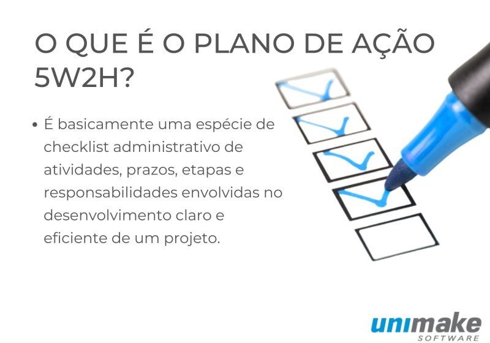
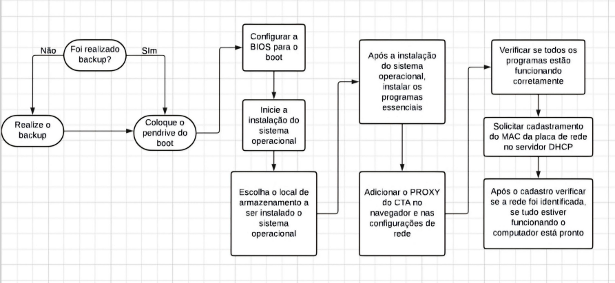

5W2H
O 5W2H se aplica bem a qualquer cenário em que você precise fazer um plano de ação, seja na sua empresa ou na vida pessoal. Não há necessariamente uma limitação para o seu uso, sendo possível traçar por exemplo, desde um planejamento orçamentário de uma empresa, lançamento de produtos, reorganização de processos, até organizar uma viagem com amigos ou uma festa de família.


FLUXOGRAMA
O fluxograma é uma ferramenta fundamental para que o setor possa definir os seus processos e como eles devem ocorrer. Por meio de figuras geométricas e setas indicativas, tem-se uma representação gráfica das etapas do projeto e a sua sequência.
